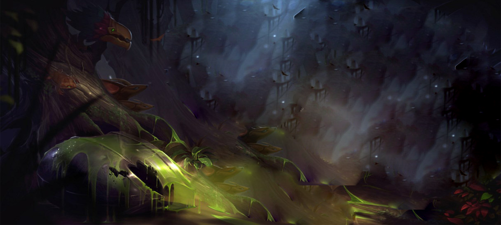
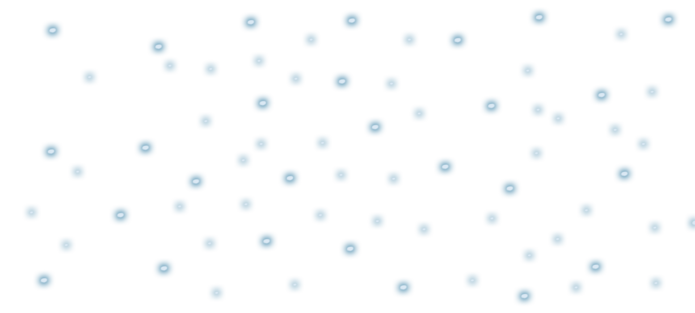
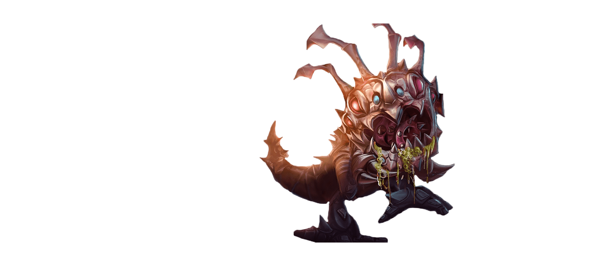
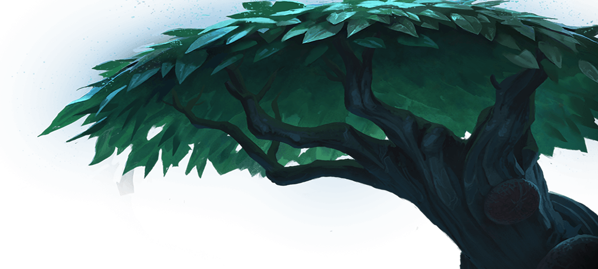

Kog'Maw,
jehož vyvrhla hnijící trhlina do Prázdnoty v pustinách Ikacie,
je zvídavý, byť hnilobou prolezlý tvor s obřím chřtánem plným žíravých slin.
Chce-li toto stvoření z Prázdnoty něčemu ve svém okolí skutečně porozumět, musí to přežvýkat a oslintat.
Kog'Maw sice není sám o sobě zlý, ovšem ve své všetečné naivitě dokáže být nebezpečný,
neboť ta může vyústit ve zběsilou žravost – ne snad kvůli hladu, nýbrž aby ukojil svou bezmeznou zvědavost.